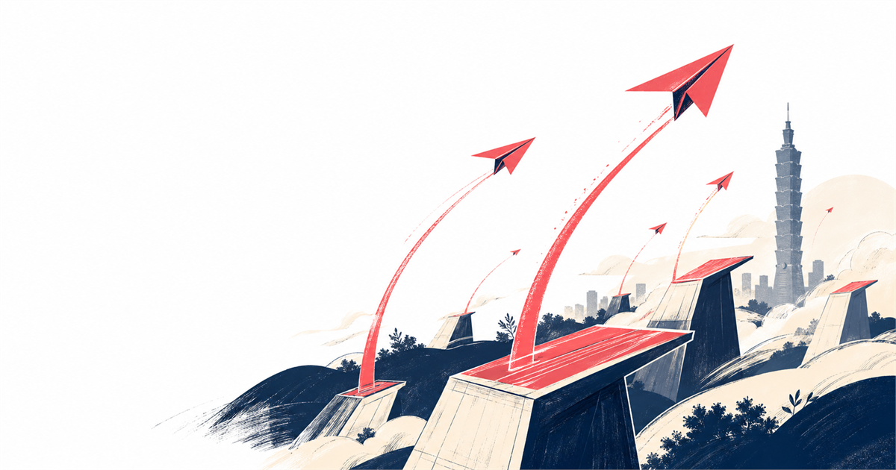

台灣創業加速器全景｜2026 八大加速器選擇指南
AppWorks、台大創創、Garage+、StarFab、林口新創園、TTA、Startup@Taipei、SparkLabs Taipei。三維度交叉分析：盤點 × 比較表 × 實戰建議。

💡 這是什麼
一份替你「省 30 小時翻官網」的整理。把 台灣 8 家主要創業加速器整理成可一眼比較的表格，從誰投錢、佔多少股、適合哪個階段、Demo Day 在哪，到不該選哪一家都講清楚。
這不是廣告文。每家都有強項跟雷區，你需要的是「跟你的階段跟題目最 fit 的那家」，不是最大牌的那家。
🗺️ 八大加速器一眼速覽
AppWorks（之初加速器）
民間 · AI / Web3 · 一年兩屆東南亞最大、Alumni 網最廣（Pinkoi、KKday、iKala、Lalamove 都在）。Jamie Lin 創辦。每屆 30+ 隊，半年計畫，無投資也可進。聚焦 AI / IoT / Web3。
台大創創 NTUTEC
學界 · 早期驗證 · 5 個月台大產學合作，5 個月企業導師制，適合「有原型但還沒 PMF」的隊伍。要求成立 7 年內、Pre-Series A、有 functional prototype。
Garage+（時代基金會）
非營利 · 國際連結 · 利他導向時代基金會旗下，1991 創立，跟 MIT、UC Berkeley 長期合作。已協助 480+ 團隊（含 244 國際隊）。聚焦 AI / 智慧裝置 / 數位醫療。
StarFab Accelerator
企業 · 六大產業 · 媒合導向2016 創立，台灣最大產業加速器。已輔導 800+ 新創，促成 NT$54 億募資，存活率 88%。六大主題：智慧製造／健康／城市／零售／農業／FinTech。
林口新創園 Startup Terrace
公部門 · 進駐基地 · 中小企業處經濟部中小企業處主導。資本額 1 億以下、員工 200 人以下、登記未滿 5 年可申請。共享空間、獨立辦公室、住宿空間三選一。
Taiwan Tech Arena (TTA)
公部門 · 國科會主導 · 國際導向國家科學及技術委員會（國科會）旗下，主打台灣科技新創出海。2026 產業型加速器合作專案進行中，截止 2026/01/19。位於台北小巨蛋。
Startup@Taipei
公部門 · 台北市府 · 補助為主台北市產發局創業台北平台，整合北市加速器與補助資源。研發補助、品牌建立、創新育成、創業補助四大類，最高 NT$200 萬。
SparkLabs Taipei
民間 · 國際 VC · 三個月集訓韓資 SparkLabs 集團台北分支，國際導師陣容強。3 個月密集 mentoring，每屆收 8-10 隊，聚焦 B2B SaaS / FinTech / 健康科技。
📊 八大加速器一張表比完
| 加速器 | 主辦方 | 投資金額（NT$） | 佔股 | 適合階段 |
|---|---|---|---|---|
| AppWorks | 民間 | 不一定（看每屆） | 0%（基本進駐免錢） | Pre-seed～Seed |
| 台大創創 | 學界（台大） | 導師資源為主 | 0% | Pre-Series A |
| Garage+ | 非營利 | 0（不投資） | 0% | 原型期～早期 |
| StarFab | 企業 | 媒合企業客戶為主 | 0% | 有 PoC 後 |
| 林口新創園 | 公部門 | 0（提供空間） | 0% | 0～5 年皆可 |
| TTA | 公部門 | 0（提供出海資源） | 0% | 科技導向中後期 |
| Startup@Taipei | 公部門 | 最高 NT$200 萬補助 | 0% | 北市登記公司 |
| SparkLabs Taipei | 民間 VC | NT$150-300 萬 | 5-8% | Seed |
※ 數字為 2026 公開資料整理，實際以各家當期條件為準。
🌱 申請加速器 5 步驟
定位自己在哪一個階段
剛有 idea？做出 demo？有付費客戶？台幣百萬營收？不同階段適合的加速器完全不同。把這四件事寫清楚再選：題目、團隊組成、進度、未來 6 個月想解決的問題。
挑 2-3 家最 fit 的，深挖 alumni
不要海投。挑 2-3 家後，去 LinkedIn 找該屆畢業團隊，發訊息問「你們進去之前跟之後最大的差別」。多數創業者願意花 15 分鐘聊。比看官網有用 10 倍。
看清楚「條款」不是「品牌」
佔股 % 是不是 SAFE / Convertible Note？有沒有 Pro-rata 權利？Demo Day 之後是否強迫接特定 VC？這些細節寫進合約才算數，不是看誰名氣大。
申請文件：商業計畫書＋3 分鐘 demo 影片
多數加速器要求 BP（10-15 頁）+ Pitch Deck（10 頁）+ Demo 影片（3 分鐘內）。重點不是花俏，是「問題清晰 / 解法可行 / 團隊能做」三件事說清楚。
面試演練：他們真的在問什麼
面試官最想知道的：你為什麼是做這題的人（why you）、不做這題你會死嗎（why now）、6 個月內你怎麼證明 PMF（what's the bet）。其他都是 noise。
🚀 進階玩法 5+ 個
跨加速器接力：政府＋民間＋企業
第一階段進公部門（林口新創園 / TTA）拿空間 + 補助，第二階段進民間（AppWorks / SparkLabs）拿錢 + alumni，第三階段進企業（StarFab）拿大客戶。三段組合資源最大化。
Demo Day 是給 VC 看的，不是給觀眾看
多數團隊把 Demo Day 當記者會，那是錯的。真正的 VC 在後面坐著，pitch 完去找他名片。Demo Day 前一週開始約 VC 1-on-1，比 pitch 本身重要 10 倍。
用「同屆 alumni」換早期客戶
進加速器最大價值不是錢、不是 mentor，是「30 個跟你同階段的創業者」。把同屆當第一批付費客戶（B2B）或推薦客戶（B2C），轉換率比冷信高 30 倍。
用 TTA 跳國際，不用搬家
TTA 主打台灣團隊出海，常合作 CES、Web Summit、SLUSH 攤位資源。一年至少出去 3 次，每次帶回 5-10 個國際客戶 lead。比自己飛便宜 80%。
同時拿補助＋進駐，不衝突
進林口新創園不影響你拿 SBIR、研發補助、Startup@Taipei 補助。多數團隊只拿一份，其實可以同時申請 3-4 份。每份最多 NT$200-500 萬，加總 NT$1000 萬不用稀釋股權。
Mentor 不是來教你，是來幫你開門
多數創業者把 mentor 當老師，問操作細節。錯。Mentor 最大價值是「他通訊錄裡的 200 個人」。每次見面只問一件事：「這個問題你會推薦我去找誰聊？」3 個月後你的人脈是別人 3 年的量。
⚠️ 常見踩坑
- ❌ 為了「品牌」進大牌加速器 ✅ 進去之後才發現你的題目跟那家不 fit，每週 mentoring 都是在浪費時間。先看 alumni 跟你題目的相似度，再看品牌。
- ❌ 沒看條款就簽 ✅ 部分加速器拿你 5-8% 股權但同時要求 Pro-rata 跟 ROFR，未來募資被卡死。簽前一定找律師看一次，NT$3000 律師費省你 10 年麻煩。
- ❌ Demo Day 把 VC 當觀眾 ✅ Demo Day 後一週是黃金期，所有 VC 還記得你。一週內主動發 5-10 封 follow-up，沒發的等於沒參加 Demo Day。
- ❌ 同屆團隊都當對手 ✅ 同屆是第一批付費客戶 / 推薦客戶 / 員工來源 / 共同創辦人候選池。藏著 idea 的人，3 年後還是一個人在創業。
- ❌ 進駐後就不離開 ✅ 加速器最有用是「前 6 個月」。半年後待著只是在燒時間。把資源吸乾後就走，別把加速器當辦公室租用。
📚 延伸資源
🎧 NotebookLM 多媒體版本（免費）
同一份內容，6 種媒體形式給你選：Podcast 通勤聽、簡報通勤看、深度報告通勤讀、閃卡通勤背、心智圖通勤看脈絡、資訊圖通勤分享。
→ 進 NotebookLM 知識包